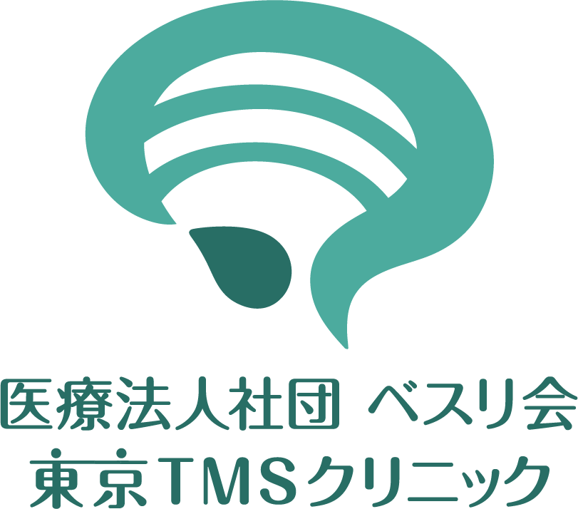

SARS-CoV-2 PCR 検査結果
管理番号3788900705111
氏名 : 高津 隆苑性別 : 男性
生年月日 : 1999年11月30日
検体採取日 : 2023年2月25日
検査日 : 2023年2月26日
検体種別 : 唾液
有効期限 : 全国旅行支援の割引等に利用する際は＋3日としてご利用ください。
検査管理者 : 竹口優三
【結果】Laboratory result
リアルタイムPCR検査(SARS-CoV-2)を行い以下の結果であった。
【陰性(検出限界以下)】
Real-time PCR test for SARS-CoV-2 (Saliva) : Negative (Not detected)
この検査は海外渡航のための陰性証明書を発行する目的の検査ではありません。
I don't take this PCR test for travelling abroad or for border inspection.
リアルタイムPCR検査(SARS-CoV-2)を行い以下の結果であった。
【陰性(検出限界以下)】
Real-time PCR test for SARS-CoV-2 (Saliva) : Negative (Not detected)
この検査は海外渡航のための陰性証明書を発行する目的の検査ではありません。
I don't take this PCR test for travelling abroad or for border inspection.
医療法人社団べスリ会東京TMSクリニック
東京都渋谷区恵比寿西１丁目１−２
しんみつビル ５F
東京都渋谷区恵比寿西１丁目１−２
しんみつビル ５F